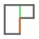
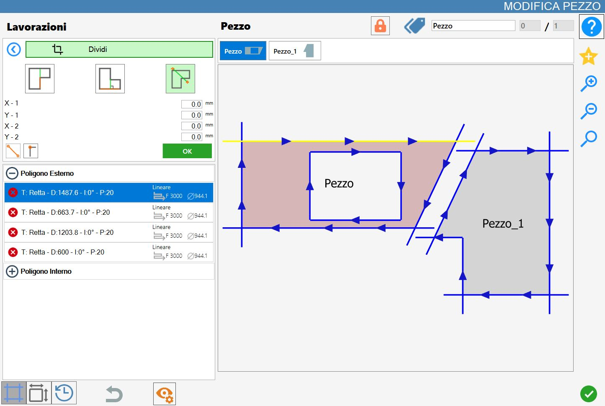

Permite dividir la pieza utilizando como referencia un lado, una línea perpendicular o una línea personalizada.
La interfaz de esta función presenta un aspecto similar a la siguiente imagen:

Parámetros
Para utilizar este mecanizado, primero es necesario elegir uno de los tres modos disponibles seleccionando el botón correspondiente:
 | Corte paralelo |
 | Corte ortogonal |
 | Corte que pasa por dos puntos |
Parámetros de corte paralelo/ortogonal
Para los dos botones siguientes es posible habilitar o deshabilitar esta función haciendo clic en la casilla situada a la derecha del texto «Alargamiento de cortes».
Alargamiento de cortes | Esta función permite al operador prolongar el corte aplicado al lado seleccionado, extendiéndolo hasta cubrir toda la longitud de la pieza en la dirección del corte. |
Offset | Distancia a lo largo del eje transversal respecto al centro del lado seleccionado. |
Parámetros de corte por dos puntos
Con el siguiente botón es posible definir las coordenadas de los dos puntos que constituyen la línea de división.
Configuración de los parámetros de los puntos de la línea de división | Al activar la función estarán disponibles cuatro campos de parámetros en los que el operador podrá especificar las coordenadas (X, Y) de los puntos inicial y final de la línea de corte. |
 | Orientación del corte |
Ajuste a vértices |
Ejecución del mecanizado
Es posible aplicar el mecanizado pulsando el botón situado a la izquierda del corte correspondiente en la lista de polígonos.
Un icono rojo con una «X» indica que el mecanizado no puede aplicarse al corte deseado.
Corte paralelo
En la siguiente imagen se ha realizado un corte paralelo en la pieza ya mostrada en la portada del capítulo:

Corte ortogonal
En la siguiente imagen se ha realizado un corte ortogonal en la pieza ya mostrada en la portada del capítulo:

Corte que pasa por dos puntos
En la siguiente imagen se ha realizado un corte que pasa por dos puntos utilizando la función de ajuste a vértices en la pieza ya mostrada en la portada del capítulo:

En la siguiente imagen se ha realizado un corte que pasa por dos puntos sin utilizar ninguna función especial en la pieza ya mostrada en la portada del capítulo:

División de las piezas
Cuando se han asociado una o varias piezas a la pieza seleccionada mediante mecanizados de División, en la parte superior del panel «Modificar pieza» aparece un botón específico para gestionar las piezas asociadas.
Dividir piezas |
Antes de la división, las piezas asociadas se gestionan de forma unificada dentro del área de trabajo. En este estado se crea un bloque formado por varios elementos que estarán sujetos a las mismas operaciones, sin estar todavía divididos.
Por ejemplo, cuando una de las piezas generadas mediante división se añade al área de trabajo desde la lista de piezas, todos los demás elementos asociados también se insertan automáticamente.
Al pulsar el botón Dividir piezas, cada pieza generada mediante dividir se desasociará de la pieza original y se tratará como un elemento independiente.
Posteriormente, tanto la lista de piezas asociadas, anteriormente visible encima de la vista previa en el panel Modificar pieza, como el botón para dividir las piezas desaparecerán de la interfaz.